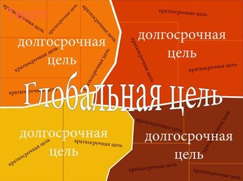
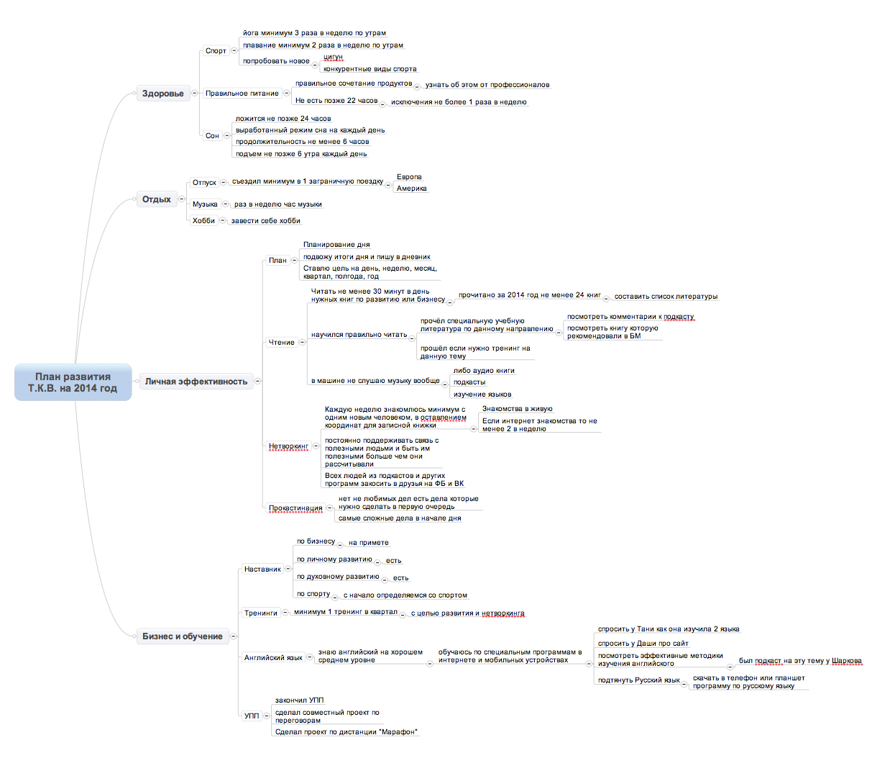

Цели на год - полезнейший инструмент организации своей жизни. Давно хотела попробовать этот метод вот и я появился случай сделать это
- Научиться верстать!
- Учить английский язык
- Улучить свой внешний вид/ввести практику йоги в ежедневный ритуал
- Прочесть пару книг
- Довязать жилетку
- Пойти в поход в Крым летом 2023г
- Самое важное смотри пункт 1
смотри пункт 1^

Прописав цели, продумайте и пропишите к каждой цели план - что вам нужно сделать, чтобы шаг за шагом к этим целям двигаться.
Когда вы сделаете только это, ваши ежедневные дела сразу станут более организованными и эффективными. Что можно сделать еще?
Один из самых простых и сильных способов - каждое утро переписывать свои цели на год от руки, еще до того, как вы пишете задачи на день. Если вы будете писать кратко, для себя, то на написание целей года уйдет всего 3-4 минуты. То есть времени тратится минимум, а эффект сильнейший: вы заряжаетесь на целый день, ваш день строится под флагом "Цели года". Вы будете составлять список дел дня, уже поглядывая на цели года, и обязательно включите что-то, что без этого могли бы и пропустить. Это организует вас думать о вашем будущем.

Есть и другие варианты: не переписывать от руки цели года, а составить табличку с этими целями и каждый день подводить итоги: ставить например плюс, если в этом направлении что-то делал, и минус, если ничего в эту сторону сделано не было. Кто-то вместо плюс и минус использует оценки по десятибальной системе - найдите то, что подойдет лично вам.
Другая метода, помогающая организовать себя в ежедневных делах, сделать их более нацеленными на главные для вас вещи, это сопоставление и анализ, как цели года соотносятся с задачами дня и делами недели. Анализируя это, вы зададите себе такие "странные" вопросы, как - для какой цели года я делаю зарядку? завтракаю? Иду на работу?
А действительно... Если вы завтракаете, думая о работе, вы позавтракаете быстро, просто закидав в себя то, что под рукой. Голова уже в делах, ноги в руки - и бегом! Если вы завтракаете, думая о своем здоровье, вы приготовите себе овсяную кашку и будете тщательно пережевывать свежее яблоко... Если вы завтракаете под цели комфорта, вы сделаете себе ароматный кофе и намажете себе совершенно царственный бутерброд. А может быть, организуя завтрак, вы заботитесь об отношениях в семье, и тогда ваш завтрак будет сделан как объединяющее всех: возможно, дети вам помогут накрыть на стол, на столе появится чистая скатерть, цветы, а вы приготовите на завтрак - несколько теплых и веселых тем для общего разговора, после которого все будут в отличном настроении. Так под какую задачу года вы завтракаете?
.jpg)